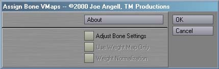
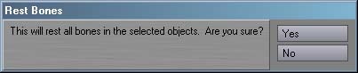

AssignBoneVMaps is a plug-in for Lightwave
6.0 or greater. It provides a series of bone tools to aid in setting
up hierarchies. It contains six Generic plug-ins:
Assign Bone VMaps,
Activate Bones,
Deactivate Bones,
Toggle Active Bones,
Record Bone Pivots and
Rest Bones.
All of these plug-ins operate on all selected bones, or on all bones in the currently selected
objects. This plug-in requires Lightwave 6.0 or greater.
To install AssignBoneVMaps, just follow these steps:
- If any copies of Layout are running, quit them now.
- Create a new directory in your Lightwave Plugins directory called TMPro and copy AssignBoneVmaps.p into it.
- Load Layout
- Select Add Plug-ins.
- Find and add AssignBoneVMaps.p. Layout should report that six plug-ins have been added.
- Quit Layout. This will update your Lightwave config and ensure that everything works properly.
- The next time you run Layout, you can launch
the AssignBoneVMaps plug-ins from
the Generics pop-up in the Plug-in Options Panel, or assign them to keys
or buttons on the interface with Configure Keys and Configure Menus.
Please refer to your Lightwave documentation for more information. The plug-ins will be
prefixed with TM_P under the Plugins heading of the Configure Keys and Configure Menus panels.
AssignBoneVmaps includes the following plugins:
Assign Bone VMaps
Assign Bone VMaps automatically assigns a weight map with the
same name as the bone to each selected bone,
or to each bone in the selected objects. While this is is done automatically
by Layout when the object is loaded,
it is helpful when you change bone names after the fact, or when you
are having troubles with third party software failing to load objects
with weight maps, and thus you must manually re-assign them in
Layout.

Assign Bone VMaps
is used by selecting the bones, or the objects containing the bones, that
you want to modify. If objects are selected, then all bones in those objects will
be affected. After selecting the appropriate items, launch
Assign Bone VMaps. You should see an interface similar to the one
here. The About button, as you'd expect, presents information about
the plug-ins.
If Adjust Bone Settings is enabled, you'll be able to activate
Use Weight Maps Only and then Weight Normalization.
The state of these buttons will only be applied to the bones if
Adjust Bone Setings is enabled. If all you want to do is
assign weight maps to bones, simply leave Adjust Bone Settings
in it's disabled state.
After hitting Yes, AssignBoneVMaps will assign
each bone in the selection a weight map of the same name, and apply the
weight-based bone settings if Adjust Bone Settings is
enabled. Clicking Cancel from the interface will return to
Layout with no changes performed.
ActivateBones
Deactivate Bones
Toggle Active Bones
Activate Bones,
Deactivate Bones and Toggle
Active Bones are related plug-ins for acitavting and
deactivating bones. While
Lightwave does include mappable commands for this already, those commands only operate on
the current item, while these plug-ins will operate on all selected bones, or all
bones in the selected objects.
Activate Bones will make th selected
bone active, just like the built-in Bone Active command.
Deactivate Bones will deactive the selected bones.
Toggle Active Bones will make the active
bones inactive, and force currently inactive bones to become active.
Note that none of these affect the bone's rest state;
they only modify the bone's active state.
Record Bone Pivots
Rest Bones
Record Bone Pivots will record the rotations of
the selected bones, or the bones of the selected objects, into the bone's
pivot point, just like Record Pivot Point, but operating on many
bones at the same time.
Rest Bones operates just like the built-in Rest
Bone command, but will affect any number of bones at once.

Upon activation, both of these plug-ins will ask you if you really
want to perform this possibly dangerous operation. If you click
Yes, the bones will be processed. Note that the processing
occurs hierarchically, from the root of the parenting chain down to the
last children. This ensures that the bones are rested as expected,
since resting in a non-hierarchical order can result in unpredictable
changes the bone chain.
Bugs? Feature requests? Can't get it to work? Feel free to contact us if
you're having any problems or want to request a feature.
All programs presented here are Copyright ©2000-2001 TM Productions, All Rights Reserved.
Please contact us if you would like to distribute any of these programs,
or if you find any particularly useful.
|